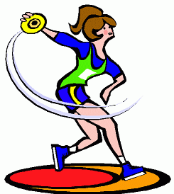

I am ambivert;
I am a former national champion for throwing shot put and discus. Now, because I am retired, I love watching others play and breaking both their own and national/world records. Anyway, I am a huge fan of sports

Since Covid-19, my perspectives changed. Now, I love all about nature.
So, if you want to see my pictures, click here
I had a third place in Physics on Science Month in 2017
I love watching royals, especially what they wear.
So there is one page about that :)
I love reading and buying books

I love travelling so much,
that I have a bucket list of places I want to go.